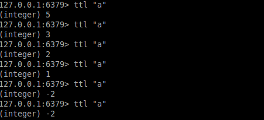

<md-dialog>
	<form>
		<md-toolbar>
			<div class="md-toolbar-tools">
				<h2>expire(key,ttl)</h2>
				<span flex></span>
				<md-button class="md-icon-button" ng-click="cancel()">
					<md-icon md-svg-src="../static/img/ic_close_24px.svg" aria-label="Close dialog">
					</md-icon>
				</md-button>
			</div>
		</md-toolbar>
		<md-dialog-content style="max-width:800px;max-height:810px; ">
			<md-tabs md-dynamic-height md-border-bottom>
				<md-tab label="DESCRIPTION">
					<md-content class="md-padding">
						<h1 class="md-display-2">DESCRIPTION</h1>
						<p>Using this function we can expire a key after some time period(in second).That key will be deleted from redis db after that given seconds. So use this function to delete key. ttl's value should be greater than or equal to zero. To explain it's working, we have been using these other functions in <strong>IMAGE</strong> tab :</p>
						<ul>
							<li>redis.StrictRedis()</li>
							<li>keys()</li>
							<li>set()</li>
							<li>get()</li>
							<li>ttl()</li>
						</ul>
					</md-content>
				</md-tab>
				<md-tab label="CODE">
					<md-content class="md-padding">
						<h1 class="md-display-2">CODE SYNTAX</h1>
						<code>r.expire(key_name,ttl)</code>
						<ul>
							<li>Here key_name is your key which you want to delete</li>
							<li>ttl(Time to live) should be in seconds</li>
						</ul>
					</md-content>
				</md-tab>
				<md-tab label="IMAGE">
					<md-content class="md-padding">
						<h2 class="md-display-2">CODE EXECUTION IMAGE</h2>
						<ol type="1">
							<li>Getting Redis Connection and checking all keys by <strong><code>r.keys()</code></strong>. Here < redis_instance> is <strong>r</strong>.</li>
							
							<li>Start Redis Client by command<strong><code>redis-cli</code></strong> in different termianl and for checking all keys, use command <strong><code>keys *</code></strong></li>
							
							<p> Now you can see in both terminals, output of commands give empty list. It means there is no key in redis</p>
							<li>Now let's add a new key <strong>'a'</strong> with value <strong>5</strong> .For this (in python), we will use <strong>set()</strong> function. Syntax for doing this is <strong><code>< redis_instance >.set(< key_name >,< key_value >)</code></strong>,for example:<strong><code>r.set('a',5)</code></strong>. Use <strong><code>r.keys()</code></strong> to check whether that key has been saved in redis or not. We also can get value of that key by <strong>get()</strong> function. Syntax for this is: <strong><code>< redis_instance >.get(< key_name >)</code></strong>, in this case <strong><code>r.get('a')</code></strong></li>
							
							<li>In redis-cli tab , use command<strong><code>keys *</code></strong> to list all keys in that db. Here we can see that there is a key with name "a" . Now we can check it's value by command <strong><code>get < key_name ></code></strong>, for example, in this case we will use <strong><code>get "a"</code></strong>. Now we can see that value of this key is 5 . Hurray !!!!</li>
							
							<li>Now let's use <strong><i>expire(key,time_to_live)</i></strong> . So in this case we will use <strong><code>r.expire('a',10)</code></strong> . Here <strong>ttl</strong> is in seconds. We will use <strong><code>ttl(< key_name >)</code></strong> to check remaining time for that key. Here we will use <strong><code>r.ttl('a')</code></strong></li>
							<ul>
								<h4><strong>ttl:</strong></h4>
								<li>if ttl_value>0 , it means after ttl_value seconds that key will be deleted from redis db</li>
								<li> if ttl_value is <strong>-1</strong> , it means it will be stored for infinity time , unless we remove key or set some expiry time</li>
								<li> if ttl_value is <strong>-2</strong> , it means that, that key has been deleted or expired.
							</ul>
								
								<li>In redis-cli tab, for checking time_to_live(in seconds) for a key is use command <strong><code>ttl < key_name ></code></strong>. For example <strong><code>ttl "a"</code></strong> and for setting expiry time period for that key use command <strong><code>expire key_name ttl_value </code></strong></li>
								
								<li>Now we know that key has been deleted because ttl_value for that key is <strong>-2</strong> . So we can cross verify that by using <strong><code>r.keys()</code></strong> . Now it should return <strong>[]</strong> in python shell.</li>
								
								<li>For redis-cli tab, to cross verify use command <strong><code>keys *</code></strong>. It should return <strong>(empty list or set)</strong>.</li>
								
						</ol>
					</md-content>
				</md-tab>
			</md-tabs>
		</md-dialog-content>

		<!-- <md-dialog-actions layout="row">
		<md-button href="http://en.wikipedia.org/wiki/Mango" target="_blank" md-autofocus>
		More on Wikipedia
		</md-button>
		<span flex></span>
		<md-button ng-click="answer('not useful')" >
		Not Useful
		</md-button>
		<md-button ng-click="answer('useful')" style="margin-right:20px;" >
		Useful
		</md-button>
	</md-dialog-actions> -->
</form>
</md-dialog>

